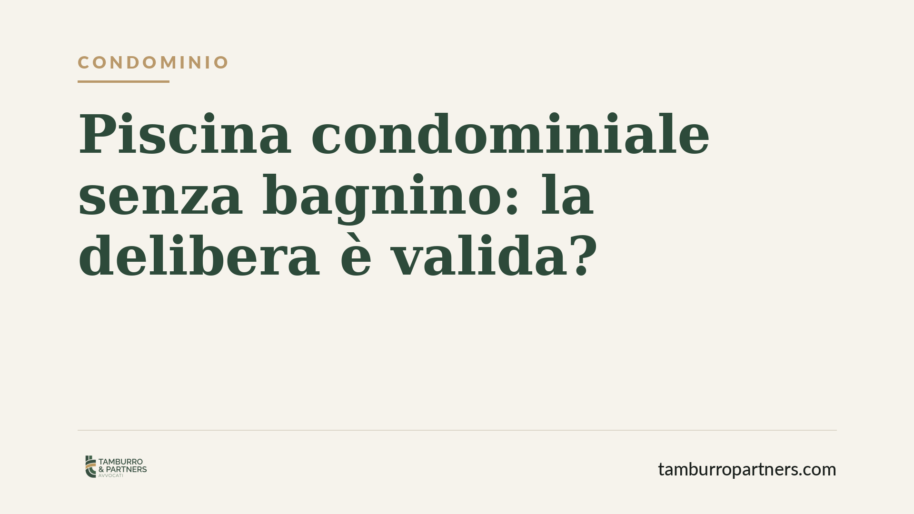

Piscina condominiale senza bagnino: la delibera è valida?
Molti condomini valutano di aprire la piscina comune senza bagnino per contenere i costi. La legittimità della decisione dipende dalla natura della clausola che disciplina l'uso e dalle normative regionali sulla sicurezza. Un errore di metodo espone la delibera a impugnazione e il condominio a responsabilità in caso di incidente.

Il fatto
La gestione delle piscine condominiali comporta costi rilevanti. La presenza di un assistente ai bagnanti è tra le voci più pesanti, e non stupisce che le assemblee valutino di eliminarla, aprendo l'impianto sotto la responsabilità dei singoli utenti.
La domanda pratica è duplice: con quale maggioranza si può decidere? E il condominio resta esposto a responsabilità se accade un incidente?
Inquadramento normativo
Il primo nodo è la natura della disposizione che oggi impone il bagnino. Occorre distinguere tra clausole regolamentari e clausole contrattuali (o negoziali).
Le clausole regolamentari disciplinano le modalità d'uso dei beni comuni e possono essere modificate dall'assemblea con le maggioranze previste dall'art. 1136 cod. civ. Il regolamento assembleare, ai sensi dell'art. 1138 cod. civ., si approva e si modifica con la maggioranza degli intervenuti che rappresenti almeno la metà del valore dell'edificio (500 millesimi).
Diverso è il caso delle clausole negoziali: sono quelle che incidono sui diritti dei singoli condomini o limitano l'uso della proprietà, tipicamente contenute in un regolamento contrattuale accettato da tutti al momento dell'acquisto. Per modificarle serve il consenso unanime. Se l'obbligo del bagnino nasce da una clausola di questo tipo, una delibera a maggioranza è nulla o annullabile.
Il secondo nodo è la disciplina sulla sicurezza. Non esiste una norma statale unitaria che imponga la sorveglianza nelle piscine ad uso condominiale (destinate ai soli condomini e non aperte al pubblico). La materia è in larga parte regolata dalle normative regionali, che variano sensibilmente e talvolta distinguono tra piscine pubbliche, private a uso collettivo e private familiari. È indispensabile verificare la classificazione dell'impianto secondo la regolamentazione locale.
Implicazioni pratiche
Anche laddove nessuna norma regionale imponga espressamente il bagnino per una piscina a uso esclusivo dei condomini, la decisione di eliminarlo non azzera i rischi.
Il condominio è custode del bene comune ai sensi dell'art. 2051 cod. civ., che stabilisce la responsabilità per i danni causati dalle cose in custodia salvo il caso fortuito. In caso di annegamento o infortunio, l'assenza di sorveglianza può essere valutata come elemento di responsabilità, soprattutto se l'impianto è accessibile a minori o non è dotato di misure alternative di sicurezza.
Eliminare il bagnino, dunque, non è una scelta neutra: sposta il baricentro della sicurezza su altri presidi (regolamentazione degli accessi, cartellonistica, dotazioni di primo soccorso, limitazioni orarie) che vanno predisposti e documentati.
Un ulteriore profilo riguarda la copertura assicurativa. La polizza condominiale potrebbe contenere clausole che subordinano l'indennizzo alla presenza di determinati presidi di sicurezza. Aprire senza bagnino in violazione di tali condizioni può comportare il rifiuto dell'indennizzo.
Cosa fare in concreto
- Verificate la natura della clausola. Recuperate il regolamento condominiale e stabilite se l'obbligo del bagnino deriva da una previsione regolamentare (maggioranza) o contrattuale (unanimità). In caso di dubbio, trattate la clausola come negoziale.
- Controllate la normativa regionale. Individuate la classificazione dell'impianto e gli obblighi di sicurezza previsti dalla vostra Regione prima di deliberare qualsiasi modifica.
- Predisponete misure alternative. Se la sorveglianza viene eliminata, documentate le misure sostitutive: regolamentazione degli accessi, divieto di ingresso ai minori non accompagnati, cartellonistica, presidi di primo soccorso.
- Rileggete la polizza assicurativa. Verificate le condizioni della copertura condominiale e confrontatele con l'assetto di sicurezza che intendete adottare.
- Verbalizzate con precisione. Riportate a verbale le maggioranze raggiunte e le misure di sicurezza deliberate, così da rendere la decisione tracciabile e difendibile.
La scelta di aprire la piscina senza bagnino è legittima solo se rispetta il corretto quorum e se accompagnata da un assetto di sicurezza adeguato. Consigliamo di far verificare preventivamente sia la natura della clausola sia le misure alternative, per ridurre l'esposizione del condominio.
---
*Contributo informativo a cura di Tamburro & Partners - Avv. Giuseppe Tamburro. Non costituisce parere legale.*
Ogni condominio ha una storia a sé.
Se gestisci un'amministrazione e vuoi un confronto su una specifica questione condominiale, scrivi allo studio. Ti rispondiamo entro un giorno lavorativo.